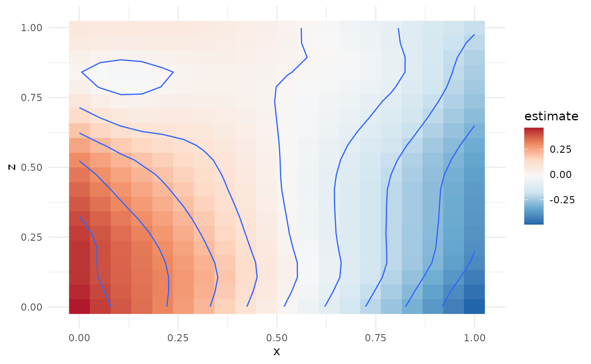

This vignette demonstrates how to meta-analyze multivariate smooth terms. In particular, we will focus on tensor interaction terms (Wood (2006)). We start by loading mgcv and generate five example datasets with somewhere between 100 and 1000 observations.
library(mgcv)
#> Loading required package: nlme
#> This is mgcv 1.9-1. For overview type 'help("mgcv-package")'.
set.seed(123)
datasets <- lapply(1:5, function(x) gamSim(eg = 2, n = sample(100:1000, 1),
verbose = FALSE)$data)Here are the first few rows from the first dataset:
| y | x | z | f |
|---|---|---|---|
| 0.3256550 | 0.7883051 | 0.1717434 | 0.0481496 |
| 0.6593630 | 0.4089769 | 0.4547616 | 0.4421995 |
| -1.9398972 | 0.8830174 | 0.7702048 | 0.3101631 |
| 0.2502011 | 0.9404673 | 0.0626500 | 0.0090102 |
| 0.4023875 | 0.0455565 | 0.8150815 | 0.1027516 |
| 0.0103863 | 0.5281055 | 0.3011425 | 0.2731830 |
GAMs with Tensor Interaction Terms
We are interested in analyzing the joint effect of the explanatory variables x and z on the response y. This can be done using tensor interaction terms. We will illustrate this using the functions in the mgcv package before showing how individual participant data can be removed and the fits be meta-analyzed.
On the first dataset, we fit the following model:
summary(mod)
#>
#> Family: gaussian
#> Link function: identity
#>
#> Formula:
#> y ~ te(x, z)
#>
#> Parametric coefficients:
#> Estimate Std. Error t value Pr(>|t|)
#> (Intercept) 0.24673 0.08726 2.828 0.00487 **
#> ---
#> Signif. codes: 0 '***' 0.001 '**' 0.01 '*' 0.05 '.' 0.1 ' ' 1
#>
#> Approximate significance of smooth terms:
#> edf Ref.df F p-value
#> te(x,z) 3.7 4.287 2.201 0.0605 .
#> ---
#> Signif. codes: 0 '***' 0.001 '**' 0.01 '*' 0.05 '.' 0.1 ' ' 1
#>
#> R-sq.(adj) = 0.0135 Deviance explained = 2.06%
#> GCV = 3.9497 Scale est. = 3.9135 n = 514We can visualize the term te(x,z) using
vis.gam. See function draw from the
gratia package for even more appealing visualizations. In
this case there seems to be an interaction between x and z, hence making
such a tensor interaction term useful.
Fitting GAMs with Tensor Interaction Terms and Removing Rawdata
Now assume that a model of the form y ~ te(x, z) is to
be fitted to data in the five locations for which we simulated above. We
can replicate this here by first fitting the GAM and then calling
strip_rawdata() on the resulting objects:
fits <- lapply(datasets, function(dat){
b <- gam(y ~ te(x, z), data = dat)
strip_rawdata(b)
})Each element in the list fits now corresponds to a model
without any individual participant data, which can be shared with a
central location for meta-analysis. The summary method for the fits
reproduces the summary output from the original mgcv::gam()
fit.
summary(fits[[1]])
#> GAM stripped for individual participant data with strip_rawdata().
#> For meta-analysis of smooth terms, use the following identifiers: te(x,z).
#>
#> Original output for gam object:
#>
#> Family: gaussian
#> Link function: identity
#>
#> Formula:
#> y ~ te(x, z)
#>
#> Parametric coefficients:
#> Estimate Std. Error t value Pr(>|t|)
#> (Intercept) 0.24673 0.08726 2.828 0.00487 **
#> ---
#> Signif. codes: 0 '***' 0.001 '**' 0.01 '*' 0.05 '.' 0.1 ' ' 1
#>
#> Approximate significance of smooth terms:
#> edf Ref.df F p-value
#> te(x,z) 3.7 4.287 2.201 0.0605 .
#> ---
#> Signif. codes: 0 '***' 0.001 '**' 0.01 '*' 0.05 '.' 0.1 ' ' 1
#>
#> R-sq.(adj) = 0.0135 Deviance explained = 2.06%
#> GCV = 3.9497 Scale est. = 3.9135 n = 514Meta-Analyzing GAMs with Tensor Interaction Terms
Assuming all GAM fits without individual participant data have been
gathered in a single location and put a list named fits
(which we did above), a meta-analytic can now be computed using
metagam(). If no grid is provided, metagam()
sets up a grid in which the argument grid_size determines
the number of unique values of each term. Using the default
grid_size = 100 in this case means that the grid has 100 x
100 = 10,000 rows. Performing meta-analysis at each of these points
might take a few moments, so we set grid_size = 20 to get a
first rough estimate.
metafit <- metagam(fits, grid_size = 20)The summary method prints out some information about the model fit.
summary(metafit)
#> Meta-analysis of GAMs from cohorts, using method FE.
#>
#> Smooth terms analyzed: te(x,z).We can then plot the corresponding meta-analytic fit. The plot can be
made more fine-grained by increasing the grid_size argument
to metagam.
plot(metafit)